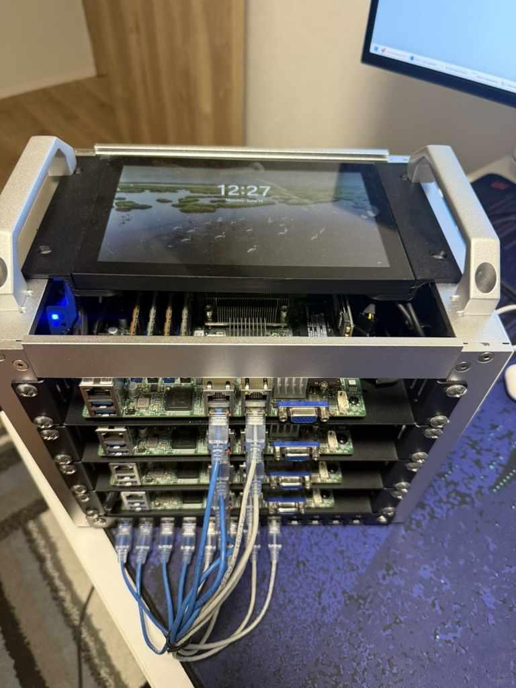

Bare-Metal Provisioning Server
An enterprise-grade bare-metal provisioning infrastructure for Ubuntu servers and Proxmox VE 9 clusters. This is a comprehensive automation solution that deploys and manages a provisioning infrastructure for zero-touch deployment of Ubuntu servers and Proxmox VE 9 clusters on bare-metal hardware using iPXE, cloud-init, and automated cluster formation via the Proxmox API.
Features
Core Infrastructure Services
- Network Services: Integrated DHCP, DNS, and TFTP server using dnsmasq
- Boot Management: iPXE-based network booting with EFI support
- Cloud-Init Integration: Automated Ubuntu server configuration via autoinstall
- Web Dashboard: Real-time provisioning status monitoring and management
- Hardware Management: Redfish API integration for server power and boot control
- Multi-OS Support: Ubuntu 24.04 and Proxmox VE 9 automated installation
Enterprise Capabilities
- Security: Hardened input validation, path sanitization, and encrypted credential management
- Scalability: Multi-node provisioning with dynamic network interface detection
- Flexibility: Support for multiple Ubuntu versions and hardware platforms
- Observability: Comprehensive logging, health monitoring, and status tracking
Architecture
Network Design
Internet -> WAN (enp1s0) -> NAT -> Provisioning Network (10.10.1.0/24)
|
+-- Management Server (10.10.1.1)
+-- Node1 (10.10.1.21) <-> Ceph Network (10.10.2.21)
+-- Node2 (10.10.1.22) <-> Ceph Network (10.10.2.22)
+-- Node3 (10.10.1.23) <-> Ceph Network (10.10.2.23)
+-- Node4 (10.10.1.24) <-> Ceph Network (10.10.2.24)
Service Stack
- Base OS: Ubuntu 24.04 LTS
- Web Server: Nginx + PHP-FPM
- Network Services: dnsmasq (DHCP/DNS/TFTP)
- Boot Loader: iPXE with EFI support
- Configuration Management: cloud-init/autoinstall
- Monitoring: Node Exporter + Health checks
End-to-End Workflow
The complete, zero-touch process for provisioning a new bare-metal node is as follows:
- The Ansible playbook on the provisioning server uses Redfish to set the target node's boot order to PXE.
- The node is powered on.
- The node's network card performs a PXE boot and sends a DHCP request.
- Dnsmasq on the provisioning server responds, assigning an IP and providing the iPXE bootloader.
- iPXE starts and fetches its configuration script from the Nginx web server.
- The iPXE script instructs the node to download and boot the Ubuntu or Proxmox installer from the web server.
- The installer starts and fetches its autoinstall configuration from the web server. This configuration is dynamically generated based on the node's MAC address, providing a unique hostname, IP address, and other settings.
- The OS installs automatically. As part of the installation, it runs a post-install script that reports back to the provisioning server's web interface, marking the installation as complete.
- The Ansible playbook, having monitored the status, uses Redfish to reset the boot order back to the local disk.
- The node is rebooted and starts up from its newly installed OS.
Proxmox VE Cluster Provisioning
The system uses a comprehensive approach that handles both node preparation and intelligent cluster formation automatically. The cluster formation process is handled by a Python script that runs on the management server and uses the Proxmox API. This method is reliable and ensures that nodes are joined to the cluster sequentially and with verification at each step.
To form the cluster, an operator runs ./scripts/proxmox-form-cluster.py from the provisioning server, which will:
- Check the status of all nodes.
- Create the cluster on the primary node (
node1).
- Join the remaining nodes to the cluster one by one.
- Verify that each node has successfully joined the cluster.
Core Components
Core Provisioning Services
- dnsmasq (DHCP/TFTP/DNS): This is the first point of contact for a new node. When a bare-metal machine is powered on and set to PXE boot, it sends out a DHCP request. Dnsmasq is configured to listen for these requests, assign a specific IP address based on the node's MAC address (defined in
nodes.json), and provide the iPXE bootloader via its built-in TFTP server. It also acts as a local DNS resolver for the provisioning network.
- Nginx & PHP (Web Server): The web server is the main engine of the provisioning process. It hosts the iPXE boot script, the unpacked Ubuntu ISO files, and the cloud-init autoinstall configurations. It also serves a simple PHP-based web interface to monitor the status of each node.
- iptables (NAT Gateway): To allow the newly provisioned nodes to access the internet for package downloads, the provisioning server is also configured to act as a NAT gateway, masquerading traffic from the internal network.
Server Management & Control
A key part of the automation is the ability to control the bare-metal servers themselves. This is accomplished through Redfish, a standard API for server management.
- Redfish Python Script (
redfish.py): A custom Python script is included to send Redfish commands to the servers. This is used by the playbooks to perform actions like setting the one-time boot device to the BIOS, allowing for configuration changes before the OS installation.
This entire sequence, from a powered-off bare-metal machine to a fully installed and configured Ubuntu or Proxmox server, is orchestrated automatically by the provisioning server, requiring no manual intervention.
